The Highlights of Siem Reap
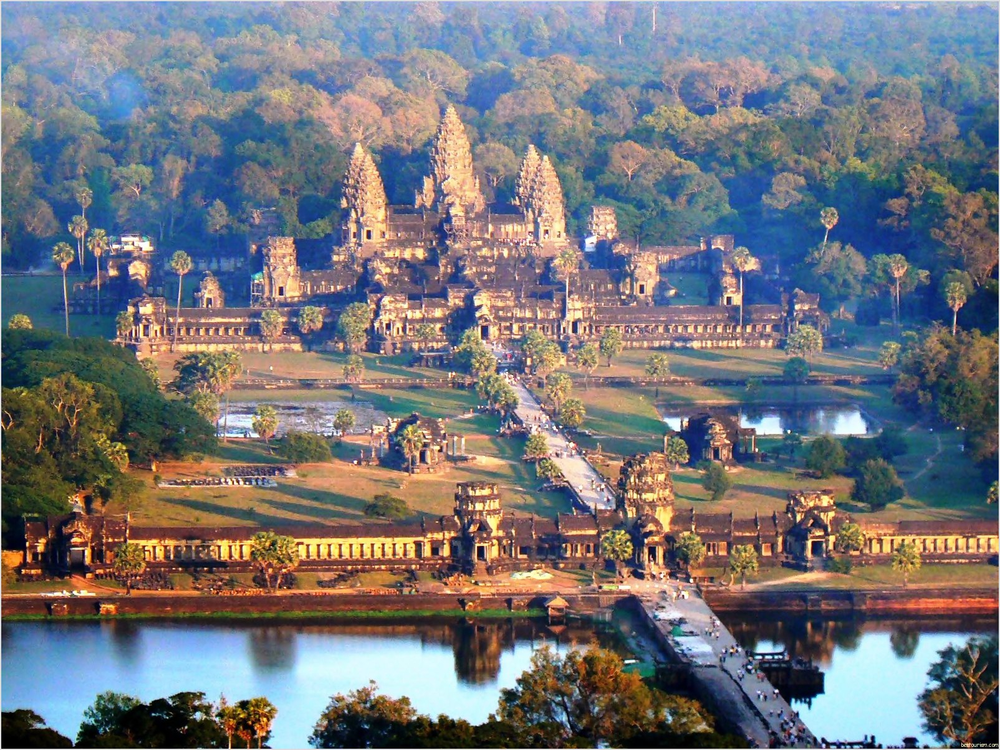
The 'temple that is a city', there are few places on earth to match the splendour of Angkor Wat. The mother of all temples is the world's largest religious building and is truly one of the wonders of the world. Sunrise at Angkor Wat is one of life's bucketlist experiences.
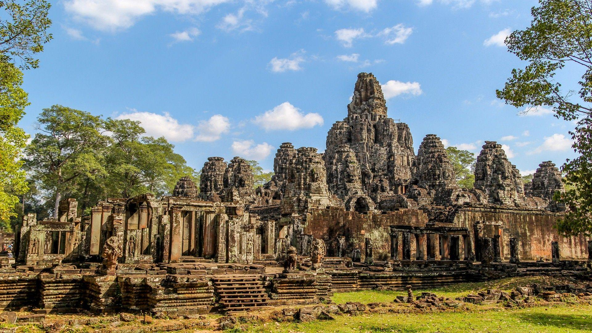
A mesmerizing labyrinth of Gothic stone towers adorned with hundreds of colossal smiling faces. As the historical center of King Jayavarman VII's great capital city, the monument radiates an enigmatic and powerful atmosphere from every angle.

Swallowed whole by the jungle, this atmospheric sanctuary remains locked in a spectacular embrace with nature. Colossal silk-cotton tree roots wrap tightly around ancient thresholds, perfectly showcasing the relentless power of time.
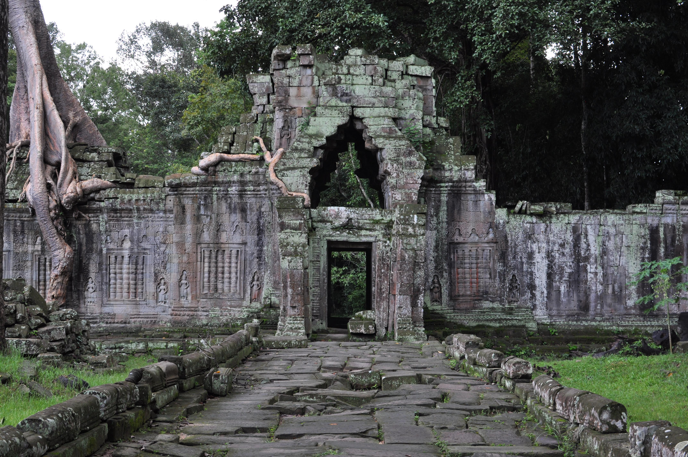
The monument translates to the 'Sacred Sword', acting as a vast complex that once housed a Buddhist university and monastic city. Its long, moody galleries remain delightfully uncrowded and filled with exquisite carvings.
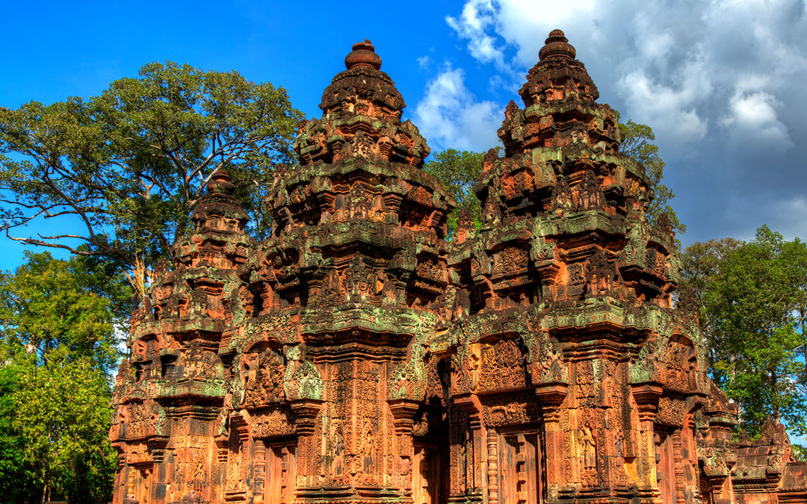
Constructed from exquisite pink-hued sandstone, the 'Citadel of the Women' boasts the absolute finest and most intricate bas-relief detail found anywhere in the ancient world. Its micro-carvings are sharp, deep, and remarkably preserved.
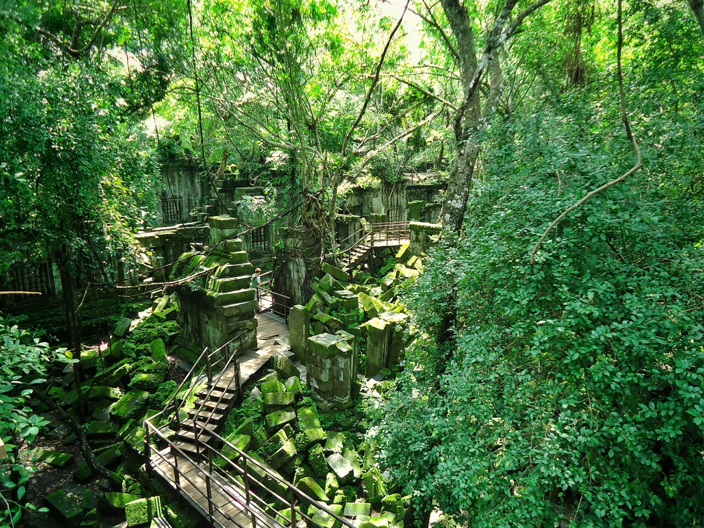
A completely raw, untamed ruin left trapped within dense jungle overgrowth. Guests can wander over collapsing roofs, through dynamic vine-choked courtyards, and across rustic wooden walking trails like classic explorers.

Deep within the northern forests lies an enigmatic, short-lived 10th-century capital. Dominated by an imposing seven-tiered sandstone pyramid rising high above the tree canopy, this remote complex offers quiet, historic pathways far removed from standard crowds.
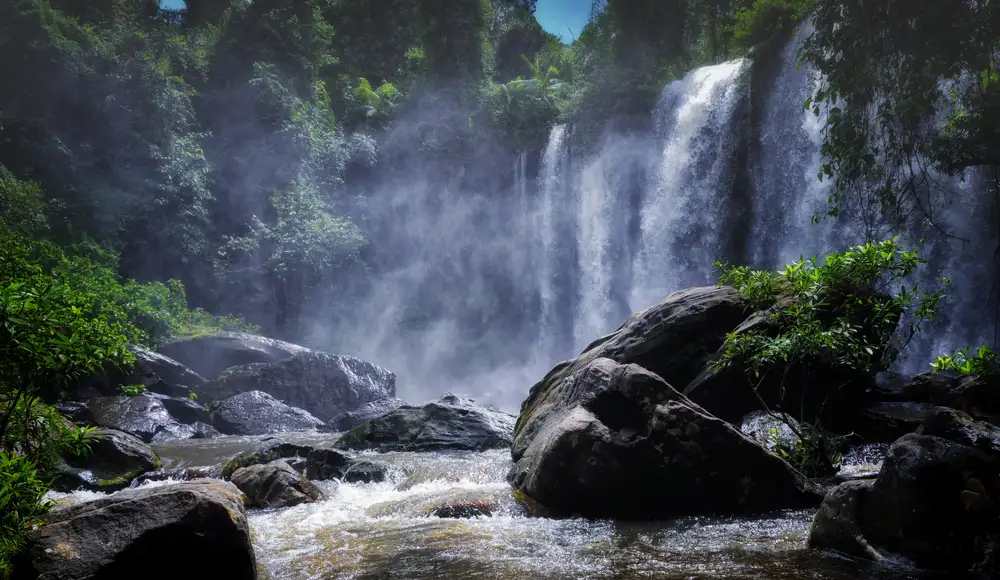
Discover the sacred birthplace of the ancient Khmer Empire. This mountain sanctuary features the spectacular River of a Thousand Lingas, where intricate carvings sit just beneath the crystal waters, a massive 16th-century reclining Buddha carved directly into a sandstone boulder, and refreshing waterfalls perfect for a midday swim.
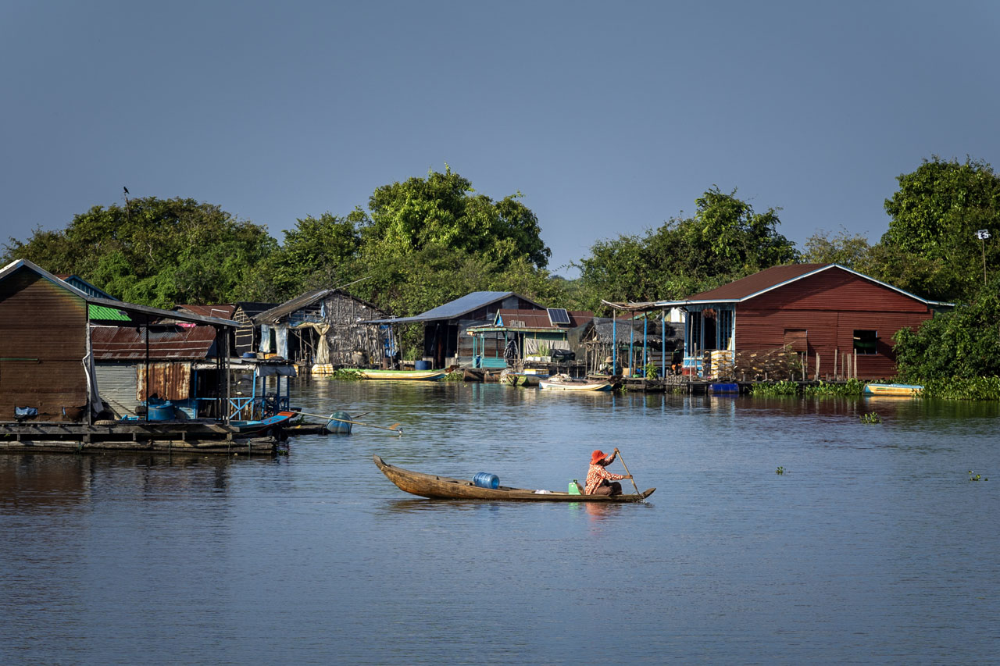
Experience the unique flow of life on Southeast Asia's largest freshwater lake. From stilted bamboo homes soaring above the floodplain to self-contained floating markets and schools, these lakeside communities showcase an incredible, generational relationship with the shifting seasonal waters.
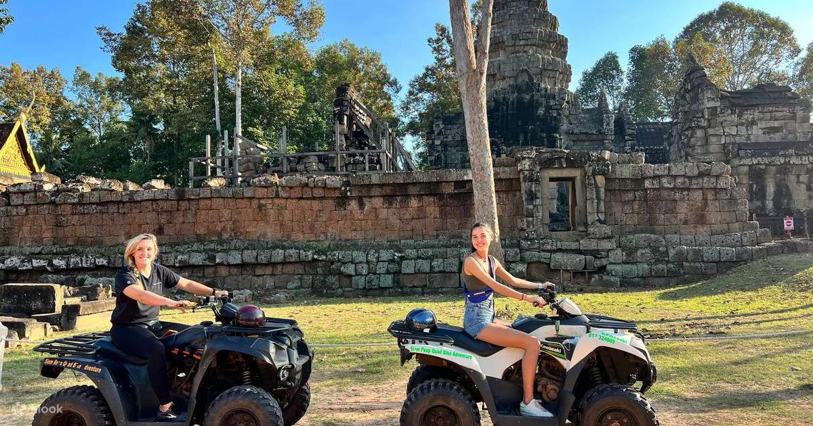
Venture off the beaten track and experience the authentic Cambodian countryside on an exhilarating all-terrain vehicle excursion. Navigating through rugged dirt roads, remote villages, and vibrant rice paddies, this guided tour offers an intimate glimpse into local rural life far beyond the temple walls. Whether riding into a brilliant rural sunset or exploring hidden pre-Angkorian ruins, the journey balances high-octane adventure with deep cultural immersion.
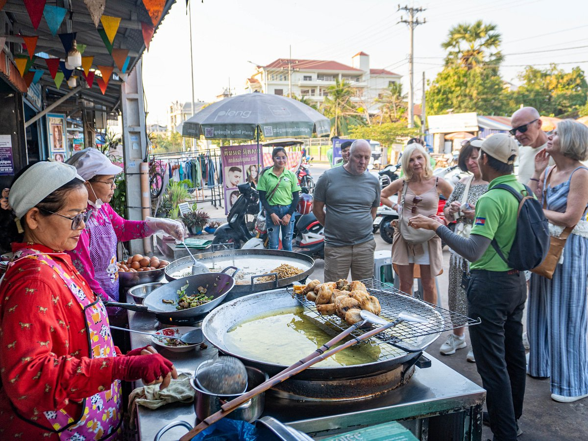
As dusk settles over Siem Reap, venture out on pillion vintage scooters to track down the region's culinary heritage. We bypass standard establishments to explore bustling evening markets and hidden local kitchens, sampling authentic Khmer delicacies and infused rice wines.
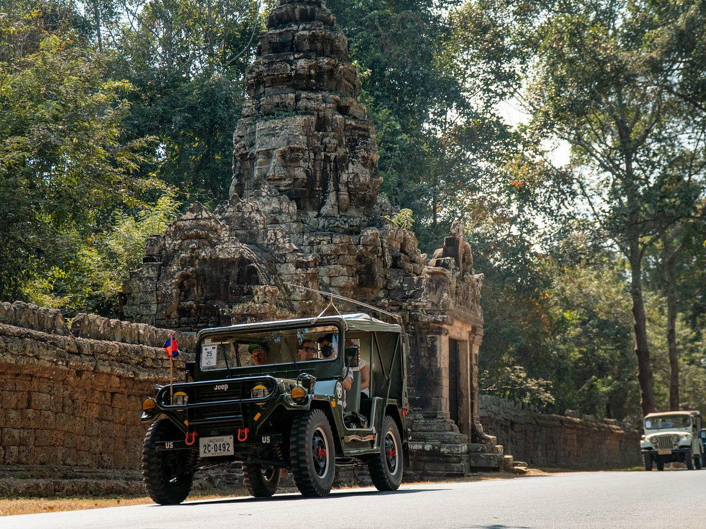
Navigate the rugged red-dirt roads of the Cambodian countryside in open-top, restored vintage jeeps. This open-air overland journey winds through scenic emerald paddies, forgotten pre-Angkorian brick ruins, and rural homesteads completely out of reach of standard transport.
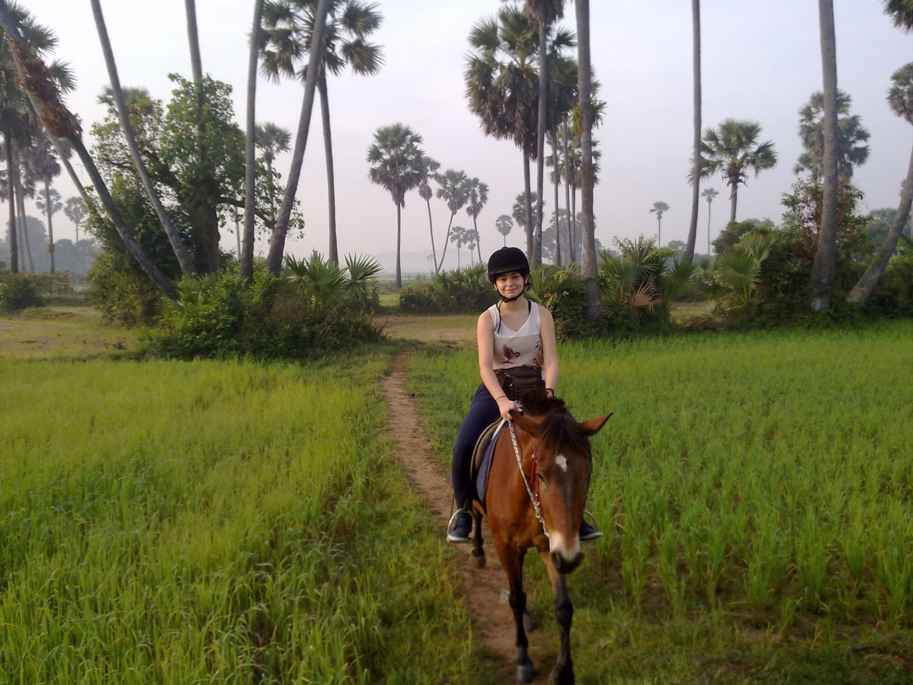
Trek through scenic rural landscapes on horseback, navigating quiet sandy paths that snake past traditional stilted villages. It provides a peaceful, slower pace for observation, culminating in views of rural ruins isolated within pastoral settings.
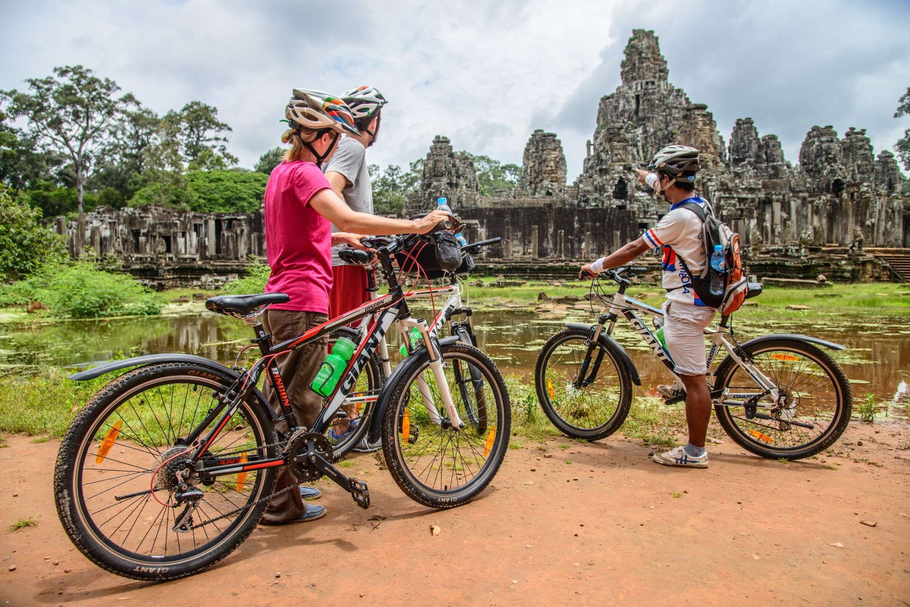
Pedal along shaded back-trails, hidden jungle tracks, and ancient temple earthen dikes. Traveling by bicycle allows travelers to feel the true contour of the land, crossing historic waterways and cooling canopies while encountering rural communities at a personalized pace.
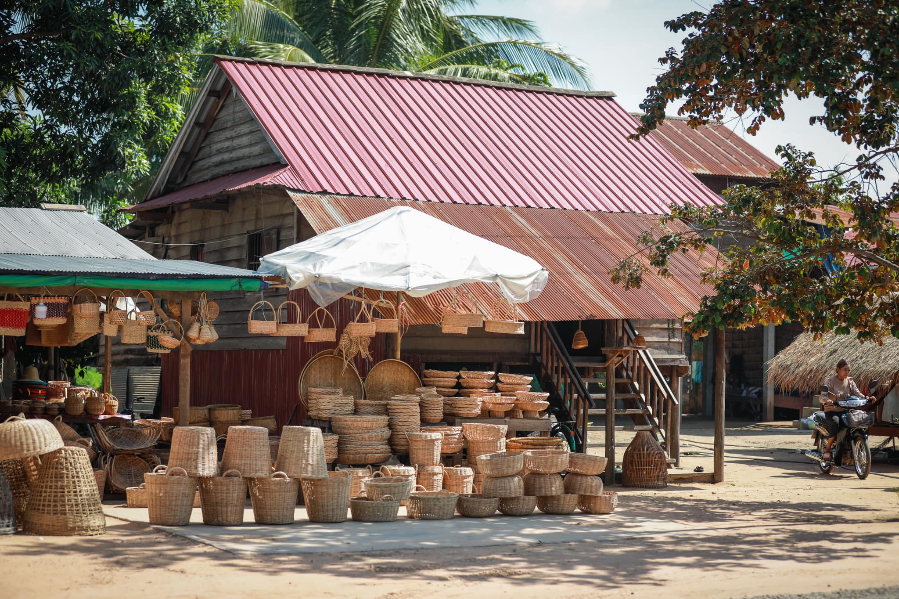
Step directly into authentic country living with private, respectful village interactions. Spend time with local artisanal weavers, watch traditional sugar-palm producers practicing their craft, and support community-led heritage initiatives that keep old-world Cambodian customs vibrant.
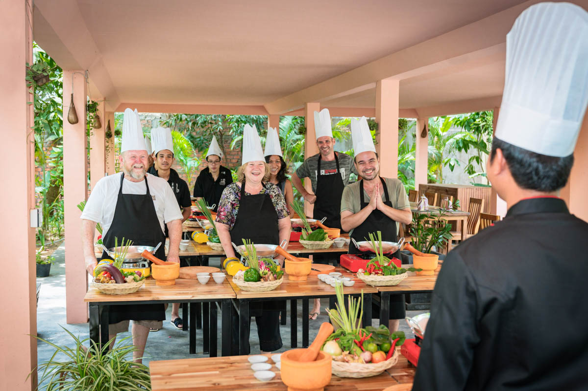
Uncover the nuanced heritage of Khmer gastronomy, one of the world's oldest living culinary traditions. Guided by an expert chef, you will gather fresh botanical ingredients and delicate spices, then retreat to a private pavilion to master the intricate balance of sweet, sour, salty, and bitter that defines signature dishes like aromatic fish amok and seasonal curries.
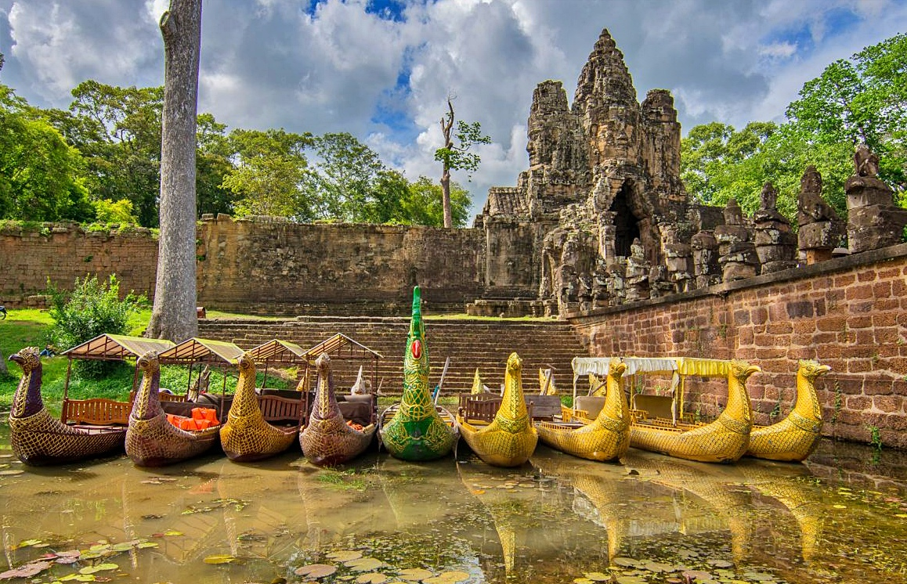
Drift along the historic moat of the ancient walled city of Angkor Thom aboard a traditional Khmer paddle boat. As the day quietens, glide past hidden corner temples and timeless forest shorelines, enjoying cold refreshments while the golden Indochine sunset casts a majestic glow across the majestic sandstone walls.
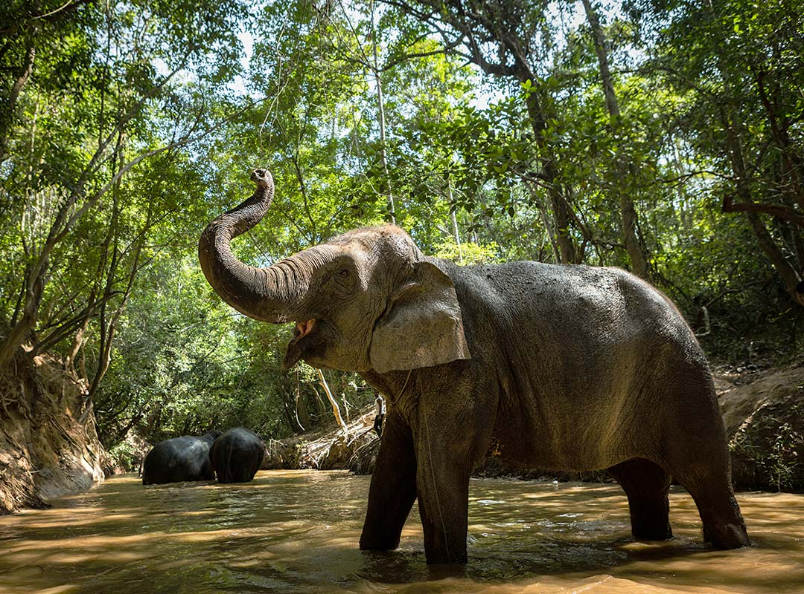
Retreat to the protected foothills of the sacred Kulen Mountains, where retired giant elephants now roam freely within their natural habitat. Spend a quiet morning walking alongside these gentle giants through dense forest canopies, observing them forage, dust-bathe, and socialize in a peaceful sanctuary dedicated to long-term conservation and care.
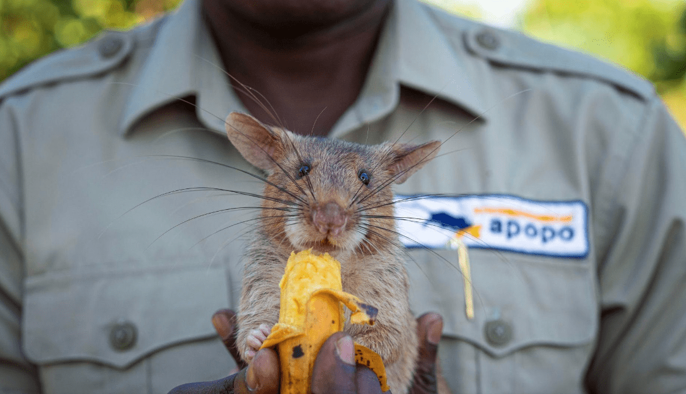
Witness a remarkable and vital chapter of Cambodia's modern history. Meet the highly trained African giant pouched rats—affectionately known as HeroRATs—and discover how their extraordinary sense of smell helps safely clear residual landmines from rural communities, restoring beautiful, arable lands to generational farmers.
.jpg)
Immerse yourself in Cambodia’s sacred performance art, a classical dance form originally preserved for royal courts and immortalized on the reliefs of Angkor Wat. Beneath the soft glow of a traditional pavilion, witness the highly stylized, hypnotic movements and ornate silk costuming of the dancers as they recount ancient epic poems, accompanied by a multi-course dinner of refined Khmer gastronomy.
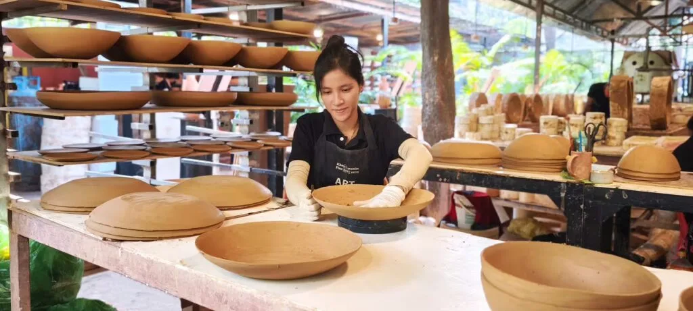
Connect with Cambodia’s rich artistic lineage through a private pottery masterclass. Working alongside master local artisans, you will use traditional pottery wheels and clay harvested from the provincial countryside to hand-mold your own pieces, learning the historic, delicate firing and green-glazing techniques that have defined Khmer pottery since the golden age of the Angkorian Empire.
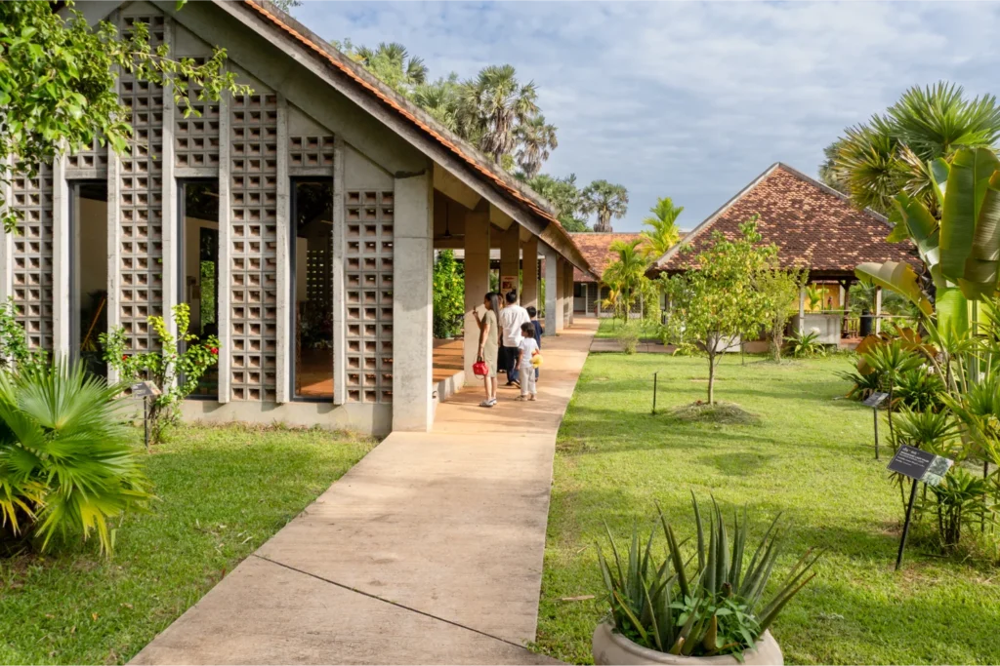
Indulge your senses in the aromatic heritage of Cambodia at this eco-responsible botanical workshop. Discover how local craftswomen transform sustainably sourced native ingredients—such as lemongrass, wild ginger, Kampot pepper, and coconut oil—into premium handmade soaps, natural cosmetics, and delicate home fragrances using traditional, artisanal techniques.
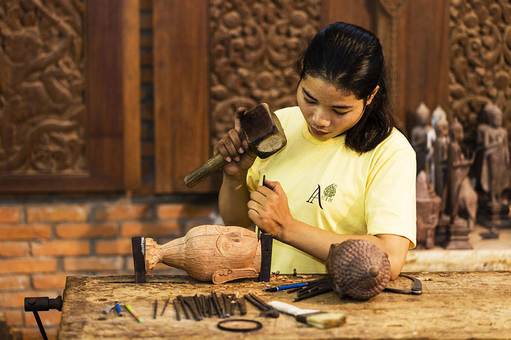
Step inside a vibrant sanctuary dedicated to preserving ancient Cambodian craftsmanship. Wander through open-air studios to watch master artisans train next-generation rural youth in fine stone sculpting, wood carving, lacquerware creation, and intricate polychrome techniques that have defined Khmer cultural heritage for centuries.
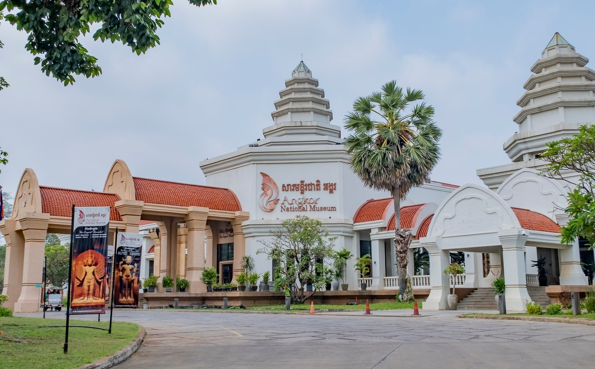
Gather essential context before exploring the stone ruins at this world-class cultural repository. Through spectacular galleries—including the breathtaking Gallery of a Thousand Buddhas—marvel at a vast collection of priceless golden-age lintels, sandstone statues, and royal artifacts that chronicle the spiritual, architectural, and historical rise of the great Khmer Empire.
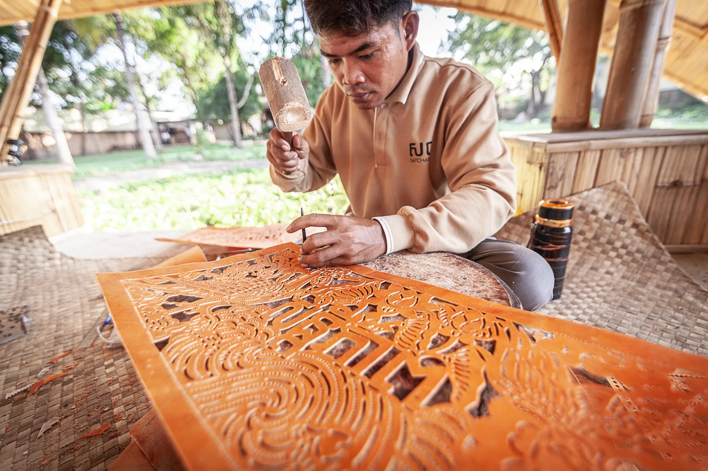
Explore Cambodia’s first incubator center dedicated to reinterpreting traditional craftsmanship with a contemporary edge. Set within sustainable bamboo pavilions, this creative cooperative allows you to engage with local woodcarvers, stone sculptors, silversmiths, and weavers who blend ancestral Khmer knowledge with modern design aesthetics to create luxury handcrafted goods.
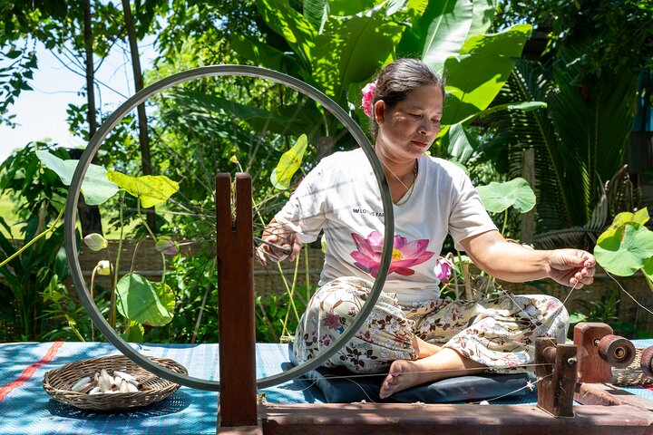
Discover one of the rarest and most ecological textiles in the world at this pioneering eco-farm. Witness the mesmerizing, step-by-step process of transforming raw lotus stems into an exceptionally soft, breathable fabric—from the delicate extraction of micro-fibers by hand to the ancient spinning and weaving techniques that produce a highly prized, spiritual thread of luxury fashion.
.jpg)
Step into Cambodia's raw history through the country's largest open-air military museum. The collection features authentic, weathered machinery from the late 20th century civil war, including Soviet tanks, fighter jets, and heavy artillery. Guided tours are often led by war veterans who share deeply moving, personal stories of survival.
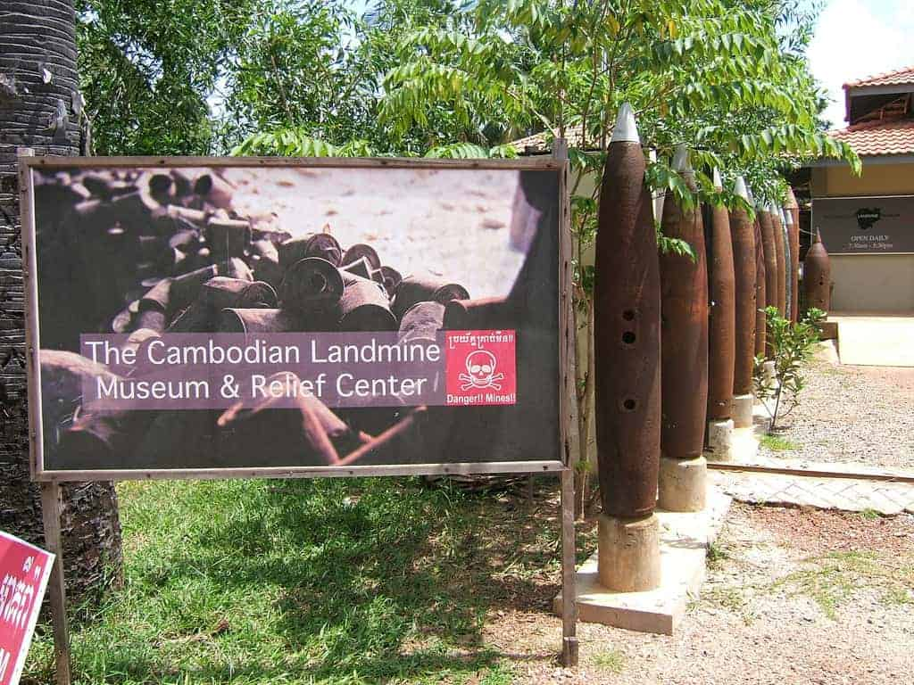
Founded by former child soldier Aki Ra, this deeply impactful museum shines a light on the ongoing legacy of landmines in Cambodia. Witness safe, defused remnants of war, learn about the painstaking process of mine clearance, and see how the foundation supports, educates, and empowers affected children in the local community.
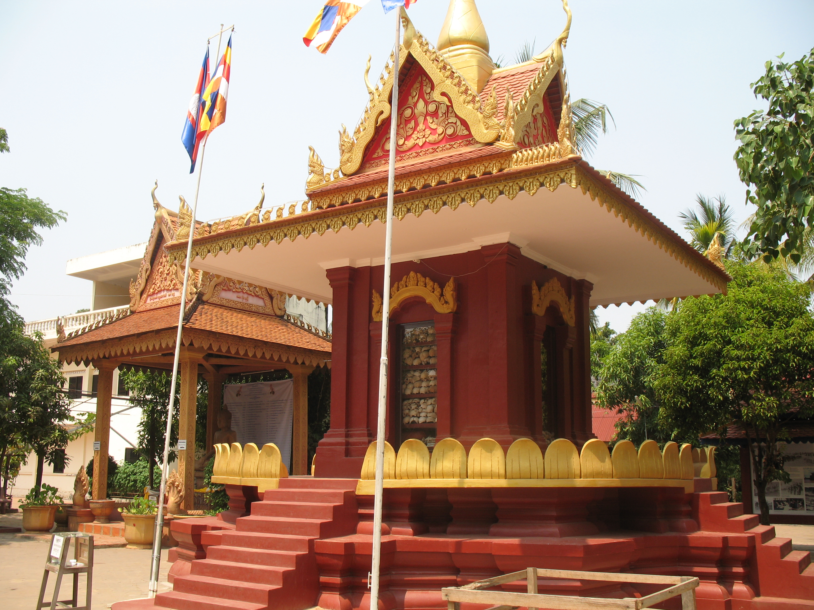
Serves as a solemn memorial to the victims of the Khmer Rouge regime. Located just outside Siem Reap's center, this active monastery houses a glass-walled stupa containing the remains of those who perished here, alongside a poignant photographic exhibition detailing the history and resilience of the Cambodian people.
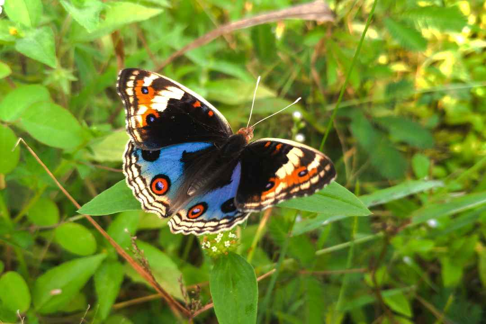
Immerse yourself in one of the largest enclosed butterfly sanctuaries in Southeast Asia. This lush, tropical net-enclosed garden is home to thousands of vibrant, free-flying native Cambodian butterflies. The center supports local communities through sustainable pupae farming and offers a fascinating look into the butterfly life cycle.
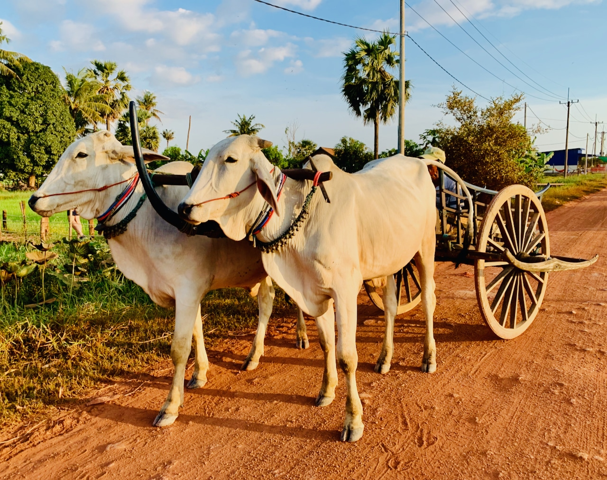
Step back in time and experience the slow, rhythmic pace of rural Cambodia with a traditional ox cart journey. Wind through quiet, dirt paths, emerald rice paddies, and local stilted villages untouched by modern traffic. This intentional, immersive experience offers an authentic window into ancestral agrarian life while directly supporting local farming families.
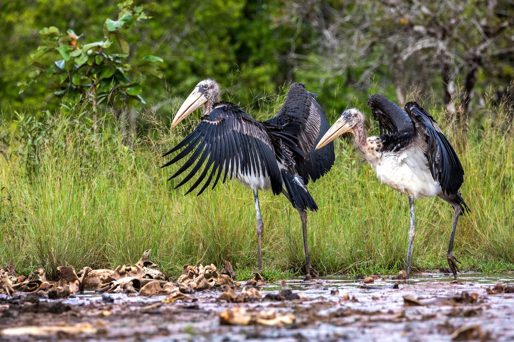
Discover Cambodia's unique wildlife at the first nature conservation center in the country, located near Kbal Spean. This guided, immersive experience takes you behind the scenes of vital rescue, rehabilitation, and breeding programs for threatened species, including rare waterbirds, gibbons, and turtles. Your visit directly supports local biodiversity conservation and environmental education efforts.

Journey deep into the Tonle Sap Biosphere Reserve to Prek Toal, Southeast Asia's most critical nesting ground for endangered waterbirds. This pioneering, community-driven ecotourism experience combines wildlife observation from treetop platforms with an authentic immersion into floating village life. By visiting, you directly fund environmental education and provide sustainable, alternative livelihoods for local families and former poachers turned rangers.
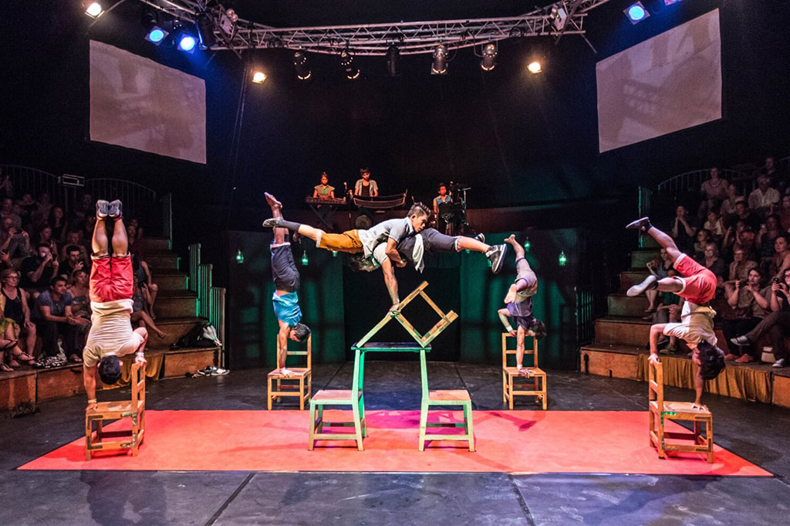
Experience the vibrant energy of modern Cambodian storytelling under the big top. Far more than a conventional circus, Phare blends high-flying acrobatics, theater, live music, and contemporary dance to bring local folklore, history, and modern society to life. Every performance is powered by talented youth from the Phare Ponleu Selpak social enterprise, meaning your evening directly funds free education and professional arts training for local communities.
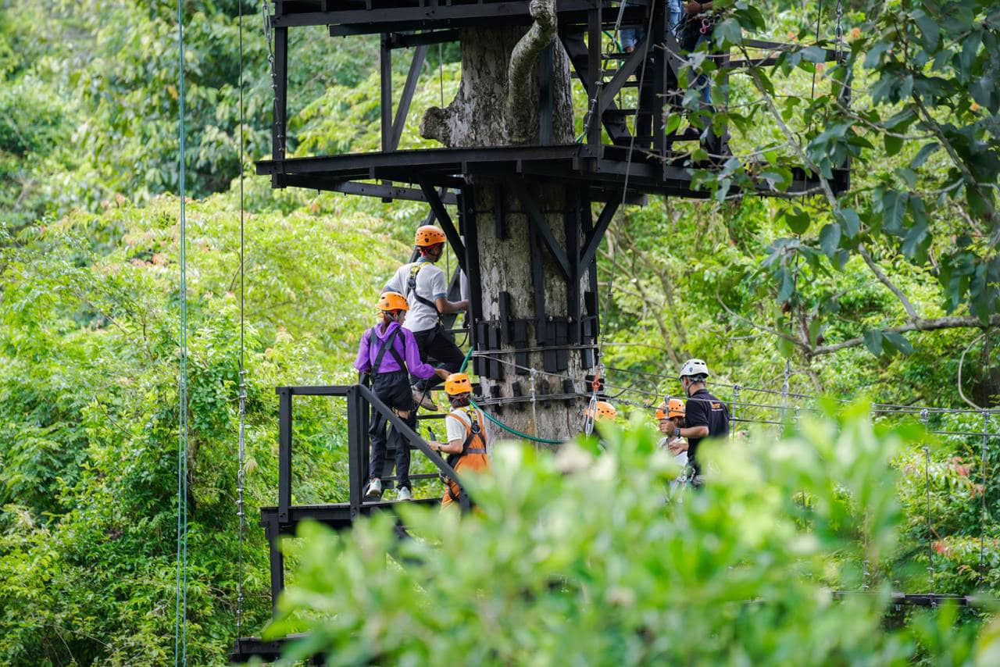
Soar high above the dense, ancient rainforest canopy hidden deep within the protected Angkor Archaeological Park. This thrilling eco-adventure features an engineered system of towering treetop platforms, suspension sky bridges, rapid ziplines, and a dramatic abseil descent. Guided by certified safety experts, the eco-tour offers a rare, bird's-eye perspective of the jungle's ecosystem while actively supporting the protection of local wildlife and the reintroduction of wild gibbons to the park.
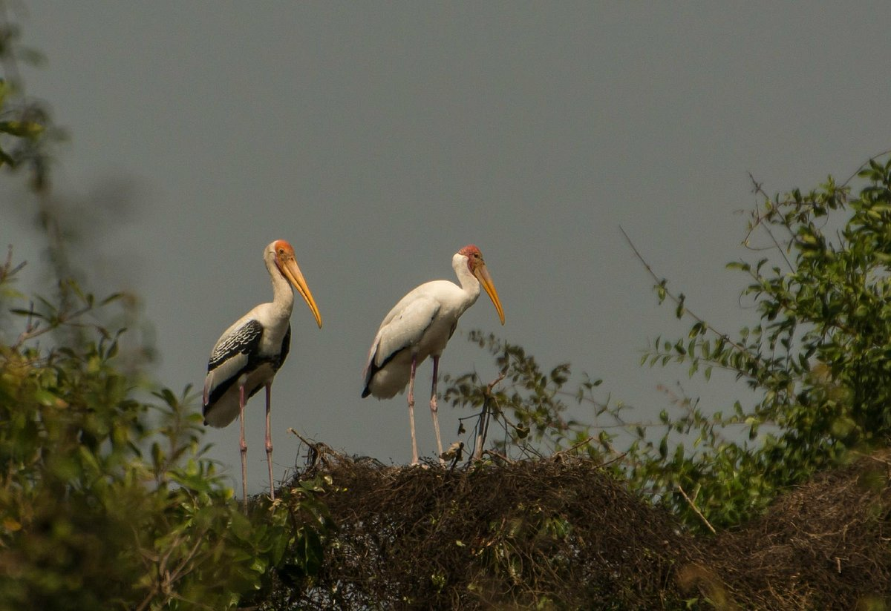
Embark on a world-class birding and wildlife excursion dedicated to preserving Cambodia's rarest species. Led by expert local guides, this eco-tour operator takes you deep into protected ibises, floricans, and vultures habitats. Your visit directly funds community-led conservation projects, providing sustainable alternative livelihoods for local villages while securing the future of critically endangered wildlife.
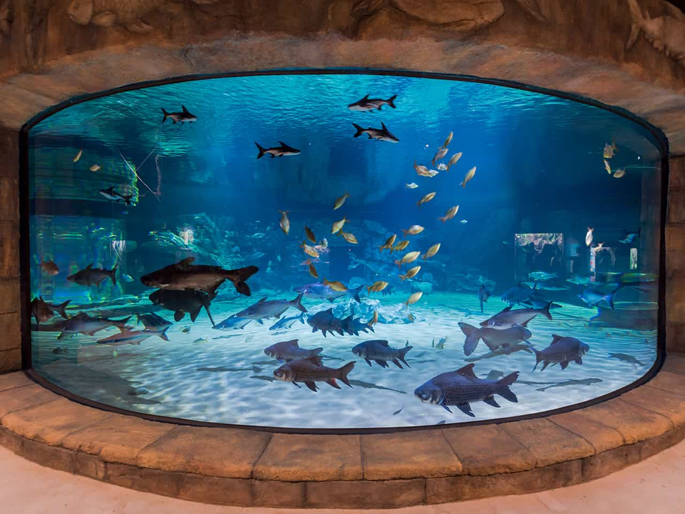
Explore Cambodia's premier destination for biodiversity education and wildlife wonders. This expansive sanctuary features a massive freshwater aquarium showcasing the unique marine life of the Mekong River and Tonle Sap, alongside outdoor habitats home to rescued tigers, Asian small-clawed otters, and sun bears. It serves as an essential hub for conservation awareness, captive breeding programs, and family-friendly wildlife education.
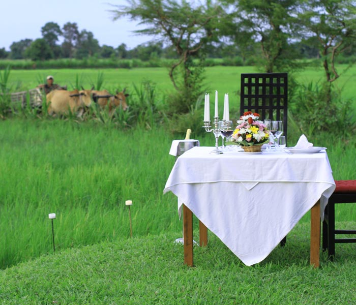
Escape the urban rhythm for an exclusive culinary journey nestled amidst the emerald rice paddies of rural Siem Reap. Indulge in refined traditional Khmer gastronomy prepared in a restored traditional wooden house, complemented by serene sunset views, candlelit garden dining, and bespoke hospitality.
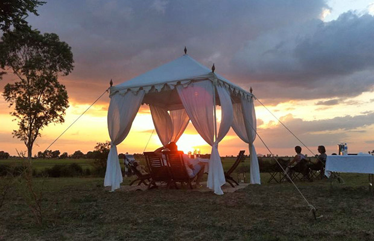
Embark on a scenic countryside drive through charming rural villages and vast rice paddies. Take in the authentic local lifestyle before pausing to admire breathtaking panoramic sunset views over the serene Siem Reap landscape while enjoying chilled champagne.
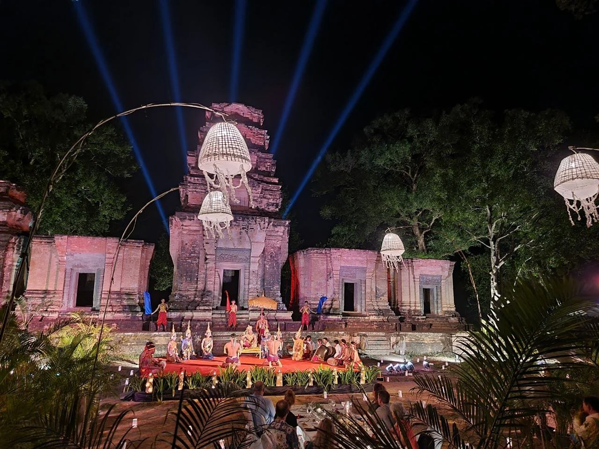
Experience an unforgettable evening of royal Khmer hospitality illuminated by torchlight against the ancient brick towers of Prasat Kravan. Delight in a gourmet multi-course dinner accompanied by classical Apsara dance performances under the stars.
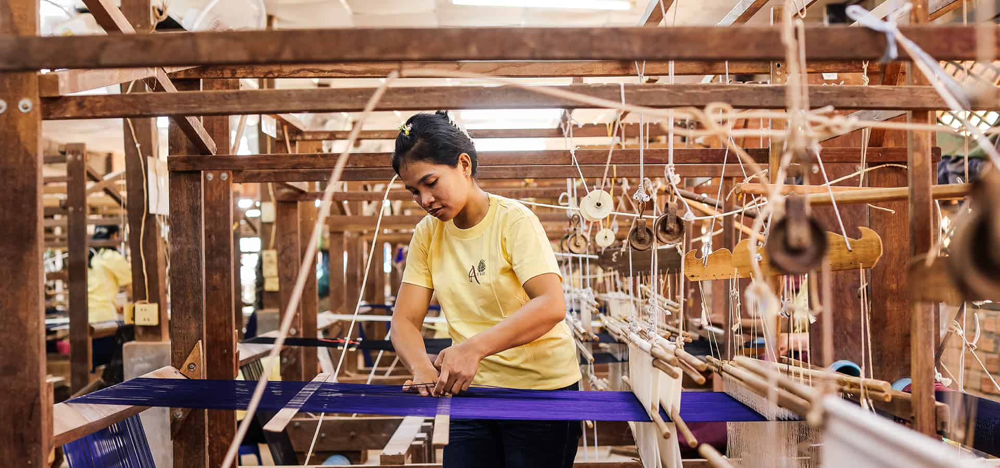
Discover the ancient art of Cambodian silk weaving on a guided tour through lush mulberry gardens and workshop spaces. Trace the entire traditional process from silkworm farming and yarn spinning to natural dyeing and intricate handloom weaving by local artisans.
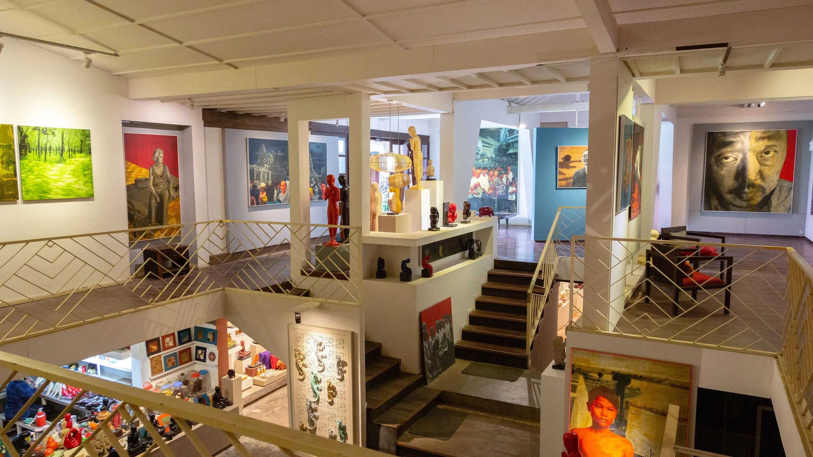
Step into a serene tropical oasis and artist's sanctuary curated by Cambodian master designer Lim Muy Theam. Explore lush gardens, traditional wooden stilt houses, and vibrant workshops filled with fine lacquerware, hand-painted sculptures, and authentic Khmer art objects crafted on-site by local artisans.
.jpg)
Ascend 120 meters into the sky aboard a safe, tethered helium balloon for panoramic 360-degree views of Angkor Wat and the surrounding Siem Reap countryside. Perfect for capturing breathtaking aerial photos at sunrise or sunset without the noise of a traditional helicopter engine.
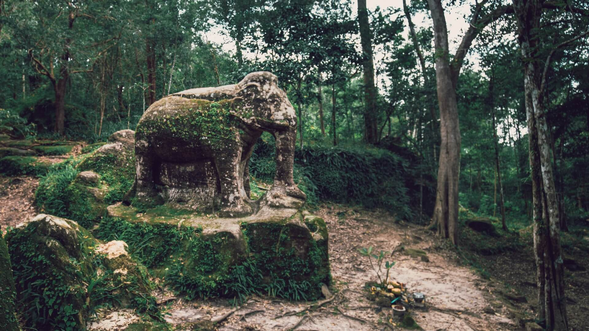
Venture deep into the sacred plateau of Phnom Kulen with local community guides from Anlong Thom Community-Based Tourism Centre. Trek off-the-beaten-path jungle trails to discover hidden ancient temple ruins, mystical bat caves, secluded waterfalls, and enjoy authentic, eco-friendly Khmer picnic lunches prepared by local villagers.
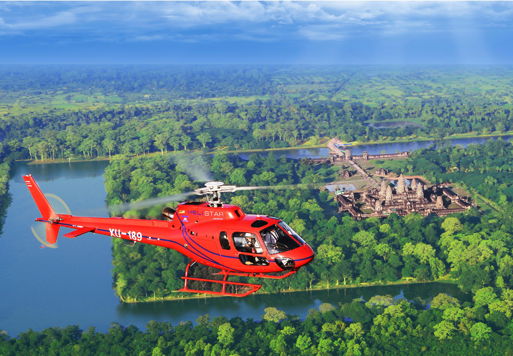
Soar above the crown jewel of the Khmer Empire on an exclusive helicopter flight over the Angkor sanctuary. Take in sweeping aerial vistas of Angkor Wat's iconic moat and five towers, the vast moat of Angkor Thom, and the lush jungle canopy from a breathtaking vantage point impossible to experience from the ground.
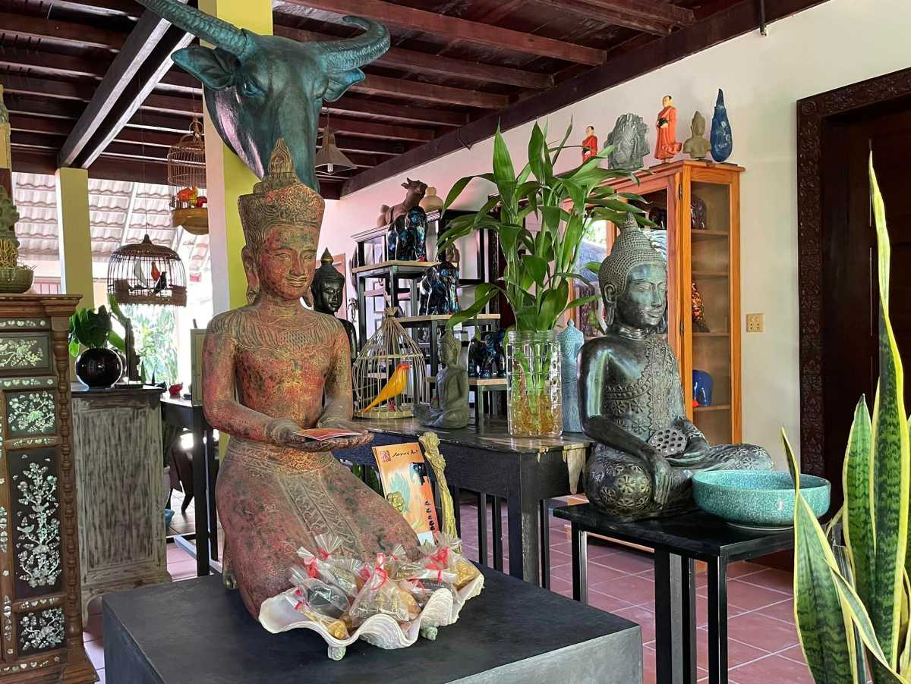
Discover the artistic world of Philippe Brousseau at Jayav Art, a unique gallery in Siem Reap famous for handcrafted papier-mâché sculptures. Admire intricate interpretations of Angkorian statues, Apsara dancers, and Khmer heritage, created using traditional techniques paired with contemporary artistic vision.